Mata Kuliah: Pemrograman Web • Universitas Andalas
Praktikum ke-8 ini berfokus pada pemahaman dan implementasi hubungan antar tabel basis data (Relationship) di dalam framework Laravel menggunakan Eloquent ORM. Implementasi skema ini mencakup pemodelan relasi struktural akademik sederhana yaitu hubungan One-to-Many antara entitas Jurusan (Major) dan Mahasiswa (Student), serta hubungan Many-to-Many antara entitas Mahasiswa (Student) dan Mata Kuliah (Subject) melalui pemanfaatan tabel perantara (*pivot table*).
Langkah awal dimulai dengan melakukan instalasi kerangka kerja Laravel baru bernama PrakWeb3 via terminal server environment menggunakan Composer Dependency Manager:
composer create-project laravel/laravel PrakWeb3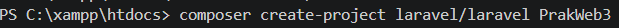
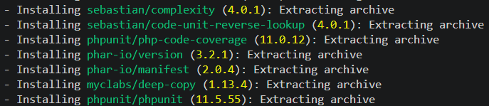
Selanjutnya, skema tabel master basis data dan foreign key didefinisikan secara struktural lewat baris migrasi. Berkas skema ini dibuat bertahap menggunakan perintah kerangka kerja bawaan Artisan CLI:
php artisan make:migration create_majors_table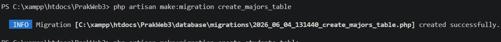
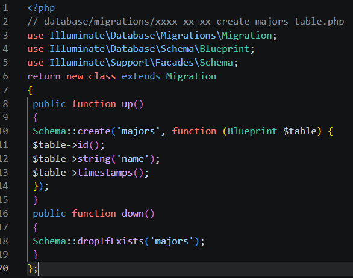
php artisan make:migration create_students_table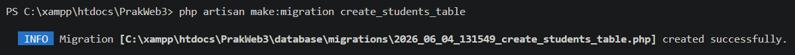
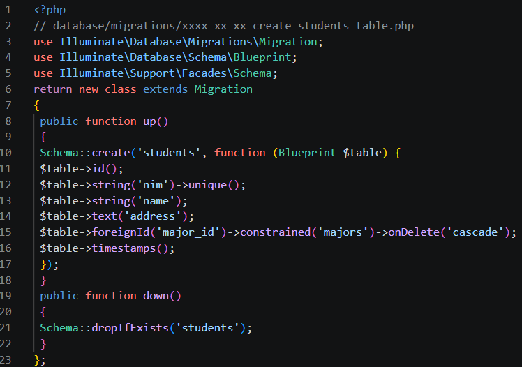
php artisan make:migration create_subjects_table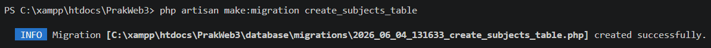
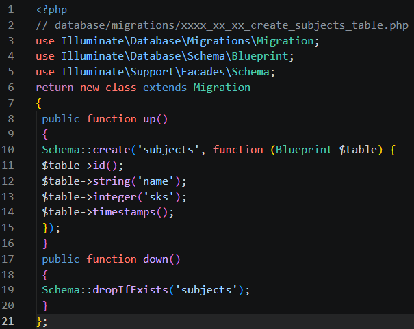
Tabel *pivot* student_subject ditambahkan field student_id and subject_id dengan batasan indeks unik kombinasi ganda guna mencegah duplikasi pengisian relasi objek data yang sama.
php artisan make:migration create_student_subject_table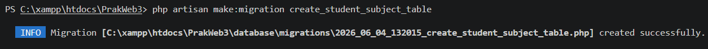
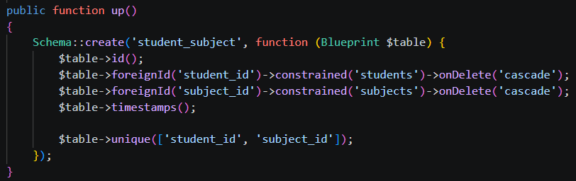
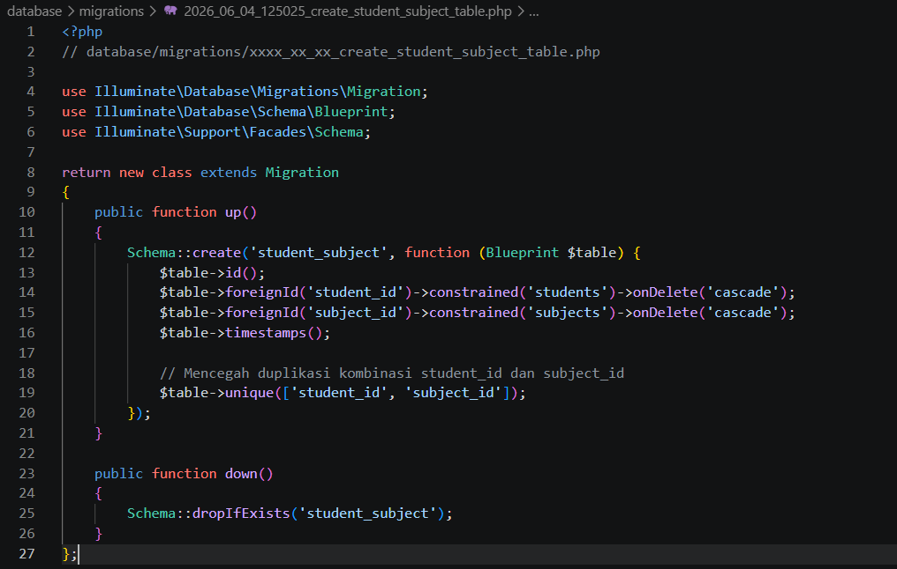
Setelah seluruh komponen berkas rancangan skema tabel terdefinisi, migrasi dijalankan ke database MySQL menggunakan Artisan Command:
php artisan migrate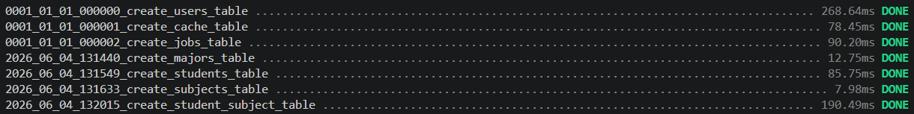
Pada tahap ini, dibuat rancangan representasi objek tabel ke dalam Class Model Eloquent lengkap beserta definisi properti pengisian massal array $fillable serta fungsi relasi pemetaannya.
Mendefinisikan fungsi kardinalitas students() menggunakan metode pemanggilan $this->hasMany() (Hubungan satu jurusan memiliki banyak mahasiswa).
php artisan make:model Major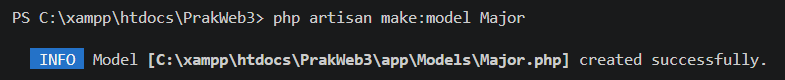
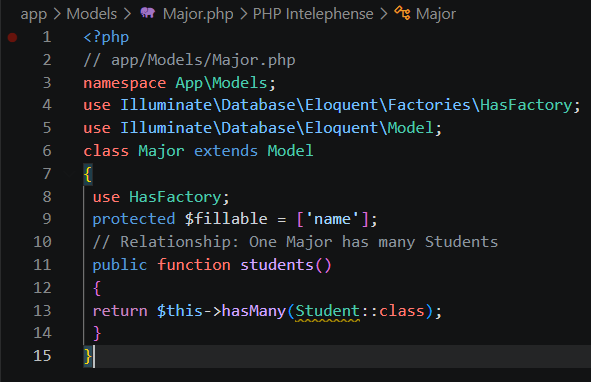
Mempunyai dua buah pemetaan relasi yaitu major() dengan metode belongsTo() serta subjects() dengan relasi jamak belongsToMany() untuk menghubungkan tabel pivot.
php artisan make:model Student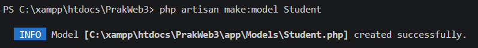
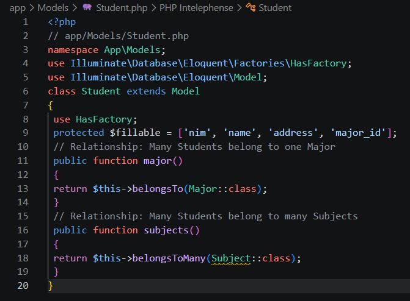
Mendefinisikan fungsi timbal-balik hubungan jamak mahasiswa lewat fungsi students() dengan metode belongsToMany().
php artisan make:model Subject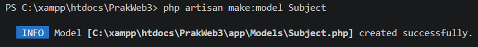
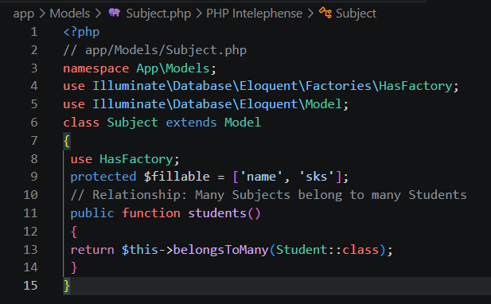
Seeding digunakan untuk otomatisasi pengisian record data uji coba awal ke dalam tabel basis data akademik yang telah berelasi. Pembuatan berkas sub-class seeder dieksekusi berturut-turut:
php artisan make:seeder MajorSeeder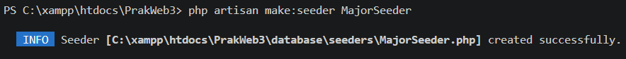
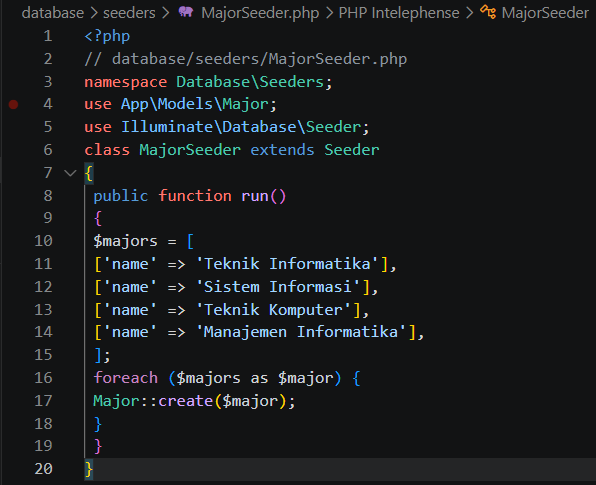
php artisan make:seeder SubjectSeeder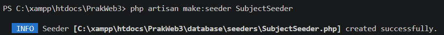
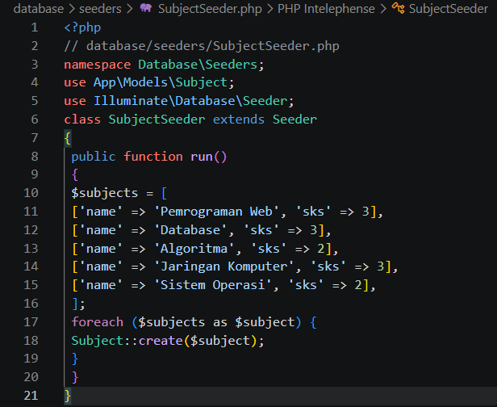
Di dalam logic class seeder ini, entitas objek mahasiswa diinput ke database, kemudian dipasangkan fungsi penambahan data mata kuliah acak memanfaatkan method bawaan Eloquent attach().
php artisan make:seeder StudentSeeder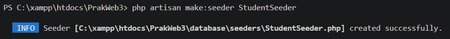
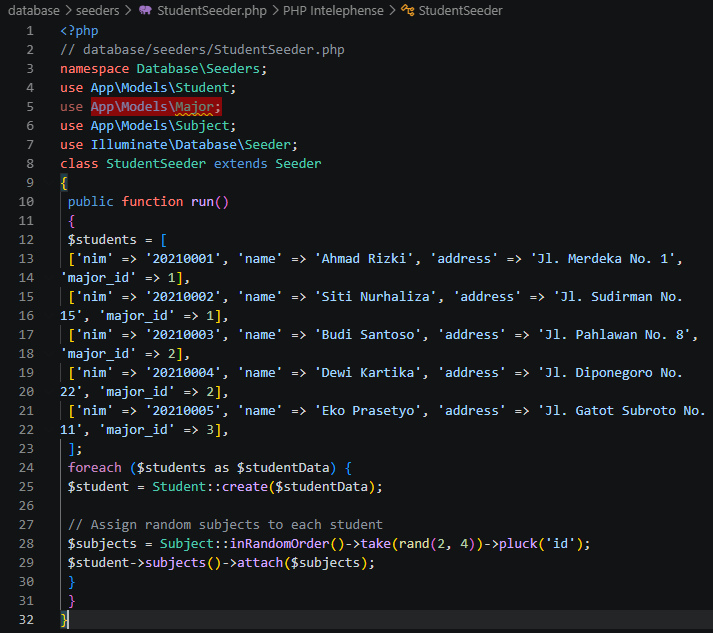
Seluruh sub-class di atas didaftarkan ke dalam method utama run() pada file penanggung jawab master DatabaseSeeder.php, kemudian dipicu serentak lewat perintah terminal:
php artisan db:seed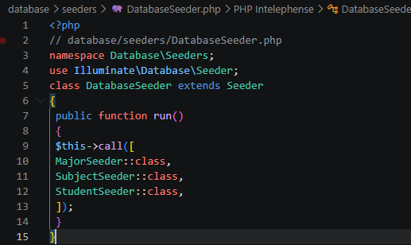
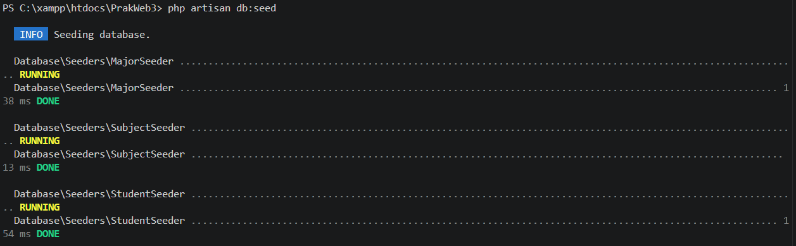
Komponen logic controller berfungsi penuh untuk menjembatani dan menangani permintaan data dari user. Berkas file StudentController.php dikonfigurasi menggunakan teknik optimasi performa Eager Loading yaitu fungsi Student::with(['major', 'subjects'])->get(). Pemanggilan metode ini sangat krusial untuk menghindari permasalahan penarikan query berulang atau N+1 Query Problem di dalam database server.
php artisan make:controller StudentController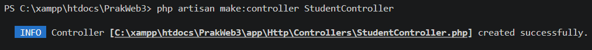
Di dalam berkas komponen StudentController, dituliskan method logika utama bernama index(). Fungsi kode tersebut bertugas menarik seluruh koleksi isi data objek mahasiswa beserta relasi tabel jurusannya, lalu meneruskannya ke view penampil students.index menggunakan bantuan fungsi bawaan compact().
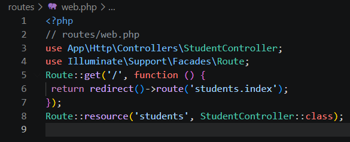
Perutean sistem dikonfigurasi di dalam berkas file rute utama routes/web.php. Sesuai instruksi modul akademik, ditambahkan fungsi *callback* GET pada rute root '/' yang diarahkan langsung untuk melakukan *redirecting* menuju rute endpoint utama students, bersamaan dengan pendaftaran rute resource terintegrasi:
Route::get('/', function () {
return redirect()->route('students.index');
});
Route::resource('students', StudentController::class);
Rancangan antarmuka tampilan menerapkan konsep template layouting yang mewarisi kerangka skeleton master di file layout layouts/app.blade.php. Data koleksi mahasiswa doloop di dalam file indeks memanfaatkan directive blade @foreach. Proses pencetakan entri baris data dipetakan secara dinamis untuk menampilkan informasi NIM ($student->nim), Nama ($student->name), Jurusan ($student->major->name), cetak daftar list badge mata kuliah perorangan, serta kalkulasi akumulasi total SKS lewat fungsi objek $student->subjects->sum('sks').
Tahap akhir pengujian diverifikasi dengan menjalankan server lokal aplikasi dan mengakses alamat endpoint URL rute pada web browser. Browser sukses mengekstrak, merender, dan menyajikan visualisasi komponen tabel dinamis daftar data seeder mahasiswa terintegrasi Bootstrap, lengkap beserta list mata kuliah berelasi yang diambil dari tabel pivot database.
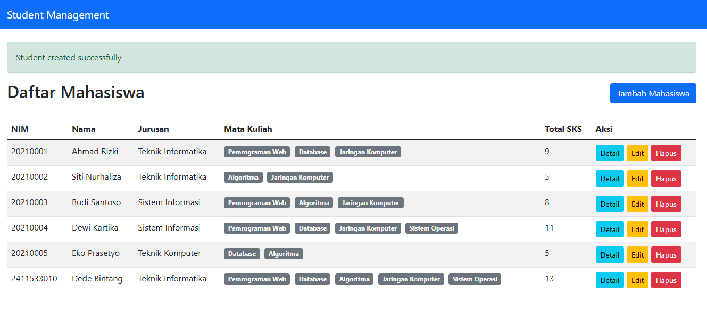